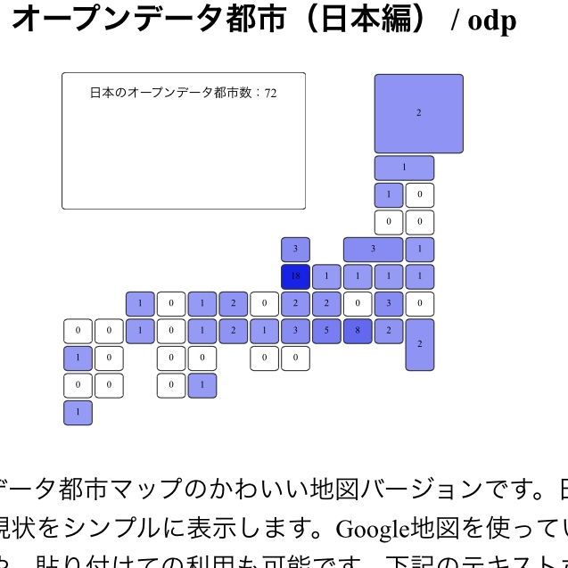

アプリケーション部門
応募作品一覧
| エントリー番号 | 作品の名称 | 応募者 | 応募概要 | エントリー情報 | |
|---|---|---|---|---|---|
| a001 | AEDオープンデータプラットフォーム | 初音玲 | AEDオープンデータプラットフォームは、日本全国のAED位置情報を検索するAPIです。
都道府県単位一覧、市町村区単位一覧、直近AED検索、周辺AED一覧などのAPIを用意しています。 |  | |
| a002 | 台風リアルタイム・ウォッチャー | 渡邉英徳 | 気象庁が提供するトップダウンの気象情報と、多数の人々がボトムアップで発信する災害発生報告をマッシュアップし、災害の状況をリアルタイムに伝えるウェブサービスです。 | ||
| a003 | 東京五輪アーカイブ 1964-2020 | 首都大学東京 渡邉英徳研究室×朝日新聞社 | 64年大会当時に朝日新聞社が撮影した5000枚超の写真群を、デジタル地球儀の三次元地形と建物モデルに重層し、この半世紀における日本人の暮らしや東京の街並みの変遷を可視化するコンテンツです。 |  | |
| a004 | オープンデータ研究所 | 石塚 亘 | 無料で使える、オープンデータ作成ツール | ||
| a005 | ゴオルシェア | 白松俊, Teemu Tossavainen, 大囿忠親, 新谷虎松 | 社会課題とその解決目標をLOD化して共有するWebアプリケーションです。組織横断的な市民協働の促進を目指しています。「名駅地下街バリアフリーハッカソン (2014/10)」等のイベントで試運用中です。 | MIT License | |
| a006 | 加古川市の避難所 | 人材育成 | データセット部門でエントリーした、「加古川市の避難所」のアプリです。 |  | |
| a007 | 中二病？論文おもしろクイズ(I-Scover) | 五味弘 | 論文のキーワードでないものを選ぶ4択形式クイズのAndroidアプリです。論文にないキーワードは中二病が好みそうな科学用語になっています。GooglePlayStoreで無料公開しています。 |  | |
| a008 | Virtual Doctor Project | 長渕啓太 | 機械学習を利用した疾病分析サービス。
幾つかの質問に回答することでその時点で最も可能性のある病気を提示します。 集合知による先進国での医療費低減、発展途上国での医療サービス向上を目的としています。 | | |
| a009 | 薬膳生活アプリケーション『Team Yakuzen』 | 榎本 真美,山口 敦子,Melissa Auclaire,中山 圭太郎 | 日常から健康や美容によい食材を選ぶため、薬膳生活を行なうためのアプリケーションです。 | | |
| a010 | バス停留所検索 全国版 | 徳納 弘和 | 全国のバス停留所を地図上に表示します。 デスクトップ版だけでなくスマホ版もあり。 | ||
| a011 | コノヘン | 株式会社jig.jp | 簡単便利な周辺探索サービススマホ向け観光Webサービス。 | | |
|  | a012 | オープンデータ都市一覧 | 株式会社jig.jp | 日本のオープンデータ都市一覧 | http://fukuno.jig.jp/ |
| a013 | オープンデータ都市マップ | 株式会社jig.jp | オープンデータ都市マップ | http://fukuno.jig.jp/ | |
| a014 | 地域資源研究所 | 榎本 真美,山口 敦子,Melissa Auclaire,中山 圭太郎 | 地方自治体の地域資源を検索するアプリケーションです。 | | |
| a015 | 流山オープンデータマップ | 株式会社リゾーム | iOSアプリ「流山オープンデータマップ」は、流山市が公開しているオープンデータとRSS、及びGoogleのストリートビューを組み合わせることで、流山市の「今」を可視化することを目的としたアプリです。 | | |
| a016 | パトロールマップ | kajitapp | 地図上で、各地方警察署配信の犯罪情報をわかりやすく表示したiOSアプリです。かわいさと操作感にこだわり抜き、かたくなりがちな犯罪情報を、犯罪にちなんだかわいいキャラクターの世界観で表現しました。 | | |
| a017 | TrainNav | ろっと | 電車の走行位置をGoogleEarth上でリアルタイムに表示できるWebサービスです。迫力ある3Dの建物の間を駆け巡る鉄道の姿を知ることができます。 | | |
| a018 | MusicSPARQL | 岡本将貴、藤井章博 | LOD(DBpedia Japanese)を用いた楽曲検索サービスです。検索結果の表示に加え、PDF出力（電子書籍化）機能やページ内での動画共有サイト、通販サイトでの検索機能も実装しています。 | | |
| a019 | ゴミ分け名人 | 加茂 聡 | 捨てたい物の写真を送れば分別方法を教えてくれるアプリ | GPL | |
| a020 | 奈良バスなび | 高木治夫 | 「奈良バスなび」アプリに、奈良市の防災情報を組み込んだ。
普段使っているアプリなので、 「いざ」というときに、直ぐに防災に役立たせることができる。 | | |
| a021 | 奈良バスなび | 高木治夫 | 「奈良バスなび」アプリに、奈良市の防災情報を組み込んだ。
普段使っているアプリなので、 「いざ」というときに、直ぐに防災に役立たせることができる。 | | |
| a022 | ご当地なび「防災情報」 | 高木治夫 | 「ご当地なび」アプリに、オープンデータ化された「防災情報」を組み込んだ。 普段使っているアプリなので、 「いざ」というときに、直ぐに防災に役立たせることができる。 | | |
| a023 | ご当地なび「防災情報」 | 高木治夫 | 「ご当地なび」アプリに、オープンデータ化された「防災情報」を組み込んだ。 普段使っているアプリなので、 「いざ」というときに、直ぐに防災に役立たせることができる。 | | |
| a024 | 動物園なび | 加藤敦丈 | 日本の動物園・水族館・鳥類園などを、場所や飼育生物の名前などから検索・関連情報を閲覧することができます。また、生物種について、名前や飼育施設を元に検索を行い閲覧することができます。 | ||
| a025 | Kokosumou | Bo Hu; Aisha Naseer | It exploits potential of LOD4all platform supporting human-centric vision for better place to live. | | |
| a026 | 神戸ロケ地マップ | 松尾 朋宏 | 「神戸ロケ地マップ」とは、神戸市によるオープンデータ化の取り組みの一環として、神戸フィルムオフィスが撮影支援した映画等の神戸市内のロケ地を紹介するアプリです。 | | |
| a027 | マルチ時間スケール年表・グラフ・画像表示Webアプリケーション：STARStouch | 村田健史 | 一瞬の現象（最短1秒程度）からゆっくり変化する事象（最長100年程度）まで，年表やグラフ，画像を見たい時間スケールでズームイン・ズームアウトおよびスライドしながら自由に表示するWebアプリケーション | | |
| a028 | 今から間に合うバス時刻 | 大野貴之, 年岡晃一 | 地図上に最寄のバス停を表示し、そのバス停への道のりと間に合う発車時刻を表示するWebアプリケーションです。 | ||
| a029 | 鉄道事業者をまたがる駅のバリアフリールート検索アプリ | オープンデータで通勤問題解決プロジェクト（仮称） | 渋谷駅の京王井の頭線改札口、東京メトロ銀座線改札口、JR玉川口改札口の間のバリアフリールートを検索する。 | | |
| a030 | 渋谷駅バリアフリー状況調査アプリ | 木田 和海 | 複数の鉄道事業者をまたいだバリアフリー経路データを現地調査にて収集するためのアプリケーション | | |
| a031 | 位置情報連携認証 | 松島輝昌 | 定められた場所に限定して、個人サイトや自社サイトへのアクセスを許可させたいときに、
位置に紐づく情報を利用することによって、ユーザ認証を行うことができます。 | ||
| a032 | 世田谷 ディサービスセンター | 古川純子 | 家族の中で、ディサービスセンターを利用する必要が出来た時に、利用者居住宅の近隣沿線・最寄り駅から、幾つかのディサービスセンターを、ビジュアライズすることができる。 | | |
| a033 | 横浜市鶴見区選挙区データ | Team inflatier（猪野 湧斗、川上 拓真、舛村 康成） | 鶴見区内の投票所の位置をマップ上ですべて閲覧可能です。投票時の手助けになればうれしいと思い作りました。 | | |
| a034 | プラネタリウムなび | 加藤敦丈 | 日本のプラネタリウム、および、その保有施設を、さまざまな情報から検索・関連情報を閲覧するためのアプリケーションです。 | ||
| a035 | ご当地なび「小説・マンガに出てくるスポット」 | 高木治夫 | ししょまろはんが作成した「京都がでてくる本のデータ」と、がんがんとしょかんが作成した「戦国時代を舞台にした歴史小説」のオープンデータを「小説・マンガに出てくるスポット」としてアプリ化しました。 | | |
| a036 | ご当地なび「小説・マンガに出てくるスポット」 | 高木治夫 | ししょまろはんが作成した「京都がでてくる本のデータ」と、がんがんとしょかんが作成した「戦国時代を舞台にした歴史小説」のオープンデータを「小説・マンガに出てくるスポット」としてアプリ化しました。 | | |
| a037 | あなたの経路探します | 石井学 | あなたの経路を探します。
あなたが誰かのために経路を設定することもできます。 例えば通れない場所（通ってほしくない場所、通るのが困難な場所）を設定すると、その場所を回避する経路を探すことができます | Apache2 | |
| a038 | RSS_Speech | 新井イスマイル,板垣宏明,村岡正和,亀山領太,中西雅幸,冨士修一 | 視覚障がい者が災害情報を迅速に取得できるアプリ | | |
| a039 | 家族の防災チェッカー | 行田尚史,谷川佳延,具志堅章子,小林茉里奈,藤江燦慧加 | 離れて暮らす家族間で、緊急時のToDoリストを作成・共有し確認できるアプリ | | |
| a040 | 淡路市災害時お役立ち施設 | NPO法人コミュニティリンク | 淡路市の避難所・学校・警察・コンビニ等災害時に参考にできる施設の場所を地図上に表示 | | |
| a041 | ご当地なび「動画・錦市場」 | 高木治夫 | 京都の錦市場のお店を動画と地図でナビゲーションしています。 | | |
| a042 | 暮らし向きを表すKANJI | 中山 圭太郎 | 東急沿線にお住まいの方のアンケート「暮らし向きを表す漢字一文字」より、2011年10月～2014年10月までのアンケート調査結果(全13回)を可視化するアプリケーション | | |
| a043 | 「We love Sakeアプリ」（京都伏見酒蔵めぐりアプリケーションソフトウェア） | 青木 和人・山下 諒・島田 さやか・Natsumi Fukuji | 「We love Sakeアプリ」は、京都での寺社観光の合間など時間ができた時にすぐ、酒蔵見学のできる酒蔵・試飲のできる酒蔵・好みの日本酒がある酒蔵をすぐに探して、その場所へ案内してくれるアプリです。 | | |
| a044 | CityData.jp | 豊田哲郎、下山紗代子 | オープンデータ・アプリ成果・イベント成果のシェアサイトであるLinkDataへの登録情報を市町村ごとに纏めて、評価指数に基づきランキングするサイト。市町村ごとの競争意識を高めてオープンデータを推進。 | | |
| a045 | 通知プラットフォームastero | 新井 晶也 | Push通知を送りたい人のためのプラットフォーム。asteroのアプリでPush通知を受け取れます。 | | |
| a046 | A-Senkyo | Team inflatier（猪野 湧斗、川上 拓真、舛村 康成） | 横浜市鶴見区の投票所に関するデータを表示するアプリケーションです。
選挙区、投票所名、投票所住所、該当地区、投票率を閲覧可能です。 自分の大まかな住所から投票所を検索できるようになっています。 | | |
| a047 | 名古屋駅コンシェルジュ | 一円 真治 | ユーザのしたいこと(=目的)に対し名古屋駅地下街の店舗情報を推薦するモバイル用Webアプリケーションです． | | |
| a048 | いちごいちえ | 西原大貴、喜多山湧也、吉武大地 | 兵庫県明石市の明石焼（玉子焼）のお店をランダムで1店舗だけ表示する明石観光促進Webアプリ。今日が定休日でない店舗、現在位置から指定した一定の距離圏内の店舗のみを表示することも可能。 | | |
| a050 | 近デジリーダー | 橋本 雄太 | 国立国会図書館の運営する『近代デジタルライブラリー』の公開資料をモバイル上で閲覧するためのAndroidアプリです（iOS版も公開予定）。 | ||
| a051 | リンクトブログ | 堤量輝 | 人物や商品など、さまざまな形式の記事をリンクさせるブログです（ウェブのバックエンドデザイン教育向け）。 | | |
| a052 | 日本酒コラボ | 飯島照之、川村隆浩、清雄一、 田原康之、大須賀昭彦 | 日本酒とコラボしているコンテンツの表示 | | |
| a053 | Open Park Yokohama | 加藤 文彦 | Open Park Yokohamaは，市民が公園をもっと有効活用できるように公園に関連するデータを整理して検索できるようにするサイトです．現在は横浜市金沢区を対象に公園や遊具の検索を提供しています． | | |
| a054 | メモリーハンティング | 北本朝展 | メモハンは、実世界のいまを写真に記録し、過去の写真にリンクするアプリ。同一構図の写真をみんなで撮影すれば、災害復興等の時間変化を疑似的に定点観測できます。また「聖地巡礼」等の観光にも利用は広がります。 | | |
| a055 | 歩こう！ガイド | 荻島和真・加藤福己 | 毎年11月3日に、名古屋市東区にて行われるまち歩きイベント「歩こう！文化のみち」におけるイベントガイドアプリです。 | | |
| a056 | デジコレエクステンション with Taggy Bank | 長屋 俊 | IDデータセットを用いて、NDL Search,NDLデジタルコレクション,CiNii Booksのデータベースの書誌情報のページからそれぞれのアイテムに相互リンクを貼ります。 | | |
| a057 | actopus | 泉将之, 山下紗苗, 新井イスマイル | 学校の時間割を簡単に変更・共有できる、学生と教職員のためのシステム。Web上で管理・公開することで、どこからでも最新の情報を得ることができます。明石高専の「時間割オープンデータ」を利用しています。 | | |
| a058 | 国宝サーチ | 井ノ上靖 | 「国宝サーチ」は日本の国宝を検索できるWebアプリケーションです。 | | |
| a059 | aromalife | 舛村 康成 | アロマテラピーと言うと、心への作用が注目されがちですが、今回は日常で体調が悪くなった時に使えるようにアプリケーションを作成しました。
症状を選択すると効果のある精油がわかるようになっています。 | | |
| a060 | twimg | 加藤遼 | twiiterで特定のワードをつぶやいているユーザーのプロフィール画像とツイート内容との関係を調査する探索的調査ツールです。クローリング、クリーニング、分析までインタラクティブに即おこなえます。 | | |
| a061 | PUSH大阪 | 磯村 克彦，上田 洋，大西 裕子，木村 満秀，古崎 晃司，松村 亮平，吉廣 之晴 | 自治体が公開しているRSSの情報を利用者の興味に応じて簡単に取得できるアプリです．各記事に関連するLODの一覧も見れます．
大阪市データを用いた「PUSH大阪」と汎用版の「PUSH広報」があります． | Web版およびRSSのクローラーはApache License V2.0，iOS版は無料で利用可能だがソースは現状では未公開 | |
| a062 | みんなで作ったオープンデータでオリジナルツアー | ほとんどハッカソン初参加チーム | 行政のオープンデータをベースに市民がコンテンツを追加し、気に入ったポイントを選んでオリジナルツアーを作ることができるアプリ。 | | |
| a063 | 放置自転車マップ | 江上周作,川村隆浩,長野伸一,清雄一,田原康之,大須賀昭彦 | 放置自転車LODを地図上に可視化するアプリケーションです。あなたのツイートが5★オープンデータ(Linked Open Data)になり可視化されます。 | | |
| a064 | ICGC Linked Data Portal | 山中遼太 | がんのゲノム変異の情報を調べるためのデータポータル |  | |
| a065 | Perfect Women | Himi's | 女性として、いつでも美しくありたい、アレルギーが気になるなどの悩みがあります。しかし、何を頼りにしていいかわかりません。PerfectWomenは、美肌になるためのスキンケア商品をアドバイスします。 |  | |
| a066 | QUAR(クオル) | 「QUAR」製作委員会 | ７つの質問にお答えいただくことで次の7ヶ国からあなたの価値観と一番マッチする国を探すことができます。
・中国 ・台湾 ・韓国 ・アメリカ ・オーストラリア ・シンガポール ・インド | MIT and GPL | |
| a067 | 明石高専学食確認アプリ | 中田 季利, 松田 裕貴 | 明石高専の学食を楽しく表示します。 | | |
| a068 | ウィキ町史ビューア | 山口琢・山形巧哉 | ウィキペディアタウンの開催で充実させた情報をもっと活用したい。ウィキペディアに掲載されている町の情報を利用した住民発信のデジタル町史を実現し、自分の町のことをもっと簡単に知ることができる仕組みを提供。 | | |
| a069 | 国会DB web | 高野政徳 | 国内の全政治家の情報を収集しています（来歴、連絡先、発言など）。各機関の情報を統合し、我々のコミュニケーションや願望の総体としての政治を可視化し、政治参加の推進とより良い制度の提案を目的としています。 | |